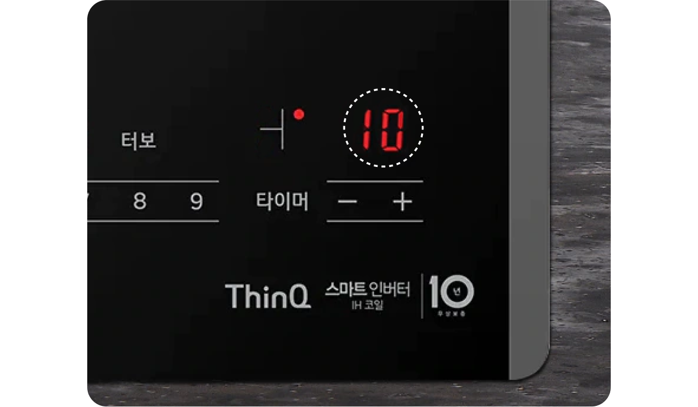

주방전기레인지


보다 더 스마트한 일상
LG ThinQ의 시작

보다 더 스마트한 일상, LG ThinQ
씽큐는 사람과 가전을 AI 기술로 연결하여 더 편리하고 놀라운 일상을 만드는 LG전자의 스마트 홈 플랫폼입니다.
* 본 콘텐츠는 ThinQ 앱의 콘텐츠입니다.
가스레인지나 하이라이트를 인덕션으로 교체했다면 바꿔야 할 게 더 있어요!
바로 인덕션에는 전용 용기가 꼭 필요하다는 사실! 인덕션은 작동원리 때문에 철(Fe) 성분이 많이 함유되어 있는 용기여야 인덕션이 잘 작동돼요. 인덕션 전용 용기에 대해 알아볼까요?
인덕션은 왜 전용 용기가 필요한가요?
인덕션의 작동 원리를 알면 왜 전용 용기가 필요한가를 알 수 있어요. 인덕션은 혼자서는 열이 발생하지 않아요.
인덕션은 제품 속 히터(코일)에 전류가 흐르면 자기장이 만들어져요. 이 위에 인덕션 전용 용기를 올려놓으면 자기장이 용기와 만나 냄비 속에 전류가 흐르게 하는데요. 이때 유도전류로 인해 용기 속에 있는 철 성분이 움직여서(유도전류 저항) 열이 발생하게 되어 용기가 가열되는 것이랍니다.
그래서 용기에 철(Fe) 성분이 많을수록 인덕션에 더 반응을 잘 하겠죠? 철 성분은 자성(자석이 잘 붙는 성질)이 있고, 철 함유량이 높은 용기가 인덕션에 적합해요.
그래서 알루미늄, 구리 등과 같은 비자성(비철) 금속 용기이거나 유리, 도기, 세라믹 등과 같은 비금속 용기는 인덕션에 적합하지 않고, 철 성분이 많이 함유된 용기들이 인덕션에 매우 적합하다고 권장하고 있어요.
우선 용기에 자석을 붙여 자성이 있는 용기인지 확인해 볼 수 있어요. 그럼, 철 성분이 많이 함유된 인덕션 전용 용기와 그렇지 않은 용기는 무엇일까요?
그럼 여기서 질문! IH 인덕션 전용 용기라 해서 구매했는데, 다 같은 거 아닌가요?
같은 인덕션 전용 용기라도 용기 재질, 용기 바닥부 접합 형상 등을 잘 봐야 해요.
위의 사진에서 바닥부를 한번 보시면 같은 인덕션 전용 용기임에도 케이스 1 과 케이스 2의 냄비가 다르죠.
케이스 1의 냄비는 일반적으로 비자성 금속이거나 비금속 재질의 냄비에 바닥부만 철 성분이 함유된 철판을 접합시켜 인덕션 제품에도 가열이 되게끔 만들어진 인덕션 전용 용기입니다. 무게가 가볍다는 장점이 있지만 인덕션의 유도가열 원리로 용기 전체에 직접 열이 전달할 수 없다는 단점이 있어요.
*저효율 용기(접합 타입 용기) 열의 흐름 : 용기 바닥부 철판에 열이 전달되고 철판과 맞닿은 주변으로 열이 전도되어 가열됨.
가정에서 사용 중이신 용기들이 인덕션에 적합한지 확인하시려면 LG 인덕션의 ‘용기가열지수’ 기능을 통해 확인하실 수 있어요. 가능하다면, 용기가열지수가 9 ~ 10인 고효율 용기 사용을 권장 드려요.
케이스 2의 냄비도 마찬가지로 인덕션 전용 용기인데요. 바닥부가 별도의 접합부 없이 제작되어 매끄럽게 생겼죠? 이렇게 Full STS(풀 스테인리스 스틸) 방식으로 제작된 냄비는 조금 무겁지만 인덕션에서 내는 가열 성능을 모두 활용할 수 있어요.
참고로, 가벼운 제품을 선호하시는 분들을 위해 최근 LG에서 출시된 인덕션들은 저효율 용기도 가열이 잘 되게끔 개선하여 나왔으니 알아두시면 좋겠죠?
(단, 2022년 1월에 출시한 BEI3*Q**시리즈 모델의 대화구에 한함)
보통 마트나 온라인 몰에서 인덕션 용기를 구입할 경우 바닥부 사이즈를 ⓑ로 안내하는 경우가 대부분이에요. 용기마다 다를 수 있지만 실제로 인덕션 용기를 가열할 때 반응하는 부위는 살짝 더 튀어나온 ⓐ이니, 꼭 이 부분을 확인하고 구매하세요.
LG 디오스 인덕션 용기가열지수 확인하는 방법
사용하는 용기가 인덕션에서 가열이 잘 되는지 용기가열지수를 통해 확인할 수 있어요.
01
용기가열지수 확인 전에, 인덕션을 사용하는 중이라면 먼저 사용 중인 모든 버너를 종료하세요.
버너를 종료하지 않고 확인할 경우, 지수가 잘못 표시될 수 있습니다.
02
물을 채운 용기를 버너 중앙에 놓아 주세요.
03
[전원] 버튼을 누른 후 출력 레벨을 9로 설정해 주세요.
04
[잠금] 버튼과 [버너] 버튼을 동시에 3초간 눌러 주세요.
05
제품 오른쪽의 표시창에서 용기가열지수를 확인할 수 있어요.

-
용기가열지수가 10에 가까울수록 용기가 잘 가열돼요. 효율적인 사용을 위해 지수가 9 이상인 용기를 사용하세요.
-
0~4 : 사용 미권장 용기
가열이 안되거나, 가열 시간이 매우 오래 걸려요. -
5~8 : 저효율 용기
사용은 가능하지만, 자성이 약해요. -
9~10 : 고효율 용기
인덕션 사용에 매우 적합하며, 자성이 강해 가열 속도가 빨라요. -
모델에 따라 용기가열지수가 다를 수 있으며, 저효율/고효율 구분은 소비자의 이해를 돕기 위해 작성된 LG전자 내부 기준입니다.
재질
철 소재의 스테인리스 용기에 자기장이 반응하여 열이 발생되는 인덕션 가열 원리 기억하시죠? 철제 프라이팬이나 냄비, 법랑 냄비, IH 마크가 있는 용기를 사용하세요. 그리고 인덕션 전용 용기라도 바닥부가 접합된 용기는 저효율 용기라 가능한 고효율 용기 사용을 권장 드려요.
IH(인덕션)용 용기 중 용기 바닥부의 재질이 법랑, 철, 주철로 접합되어 있는 용기도 사용 가능하나 용기가열지수를 확인하여 사용하세요.
이런 재질은 안돼요
내열유리, 구리, 알루미늄(양은), 일반 유리, 도기, 세라믹(뚝배기)인 용기, 기타 직화구이 냄비, IH(인덕션) 전용 마크가 없는 스테인리스 용기는 사용하면 안 돼요.
· 도자기 용기는 IH(인덕션) 전용이라고 표시돼 있어도 사용하지 마세요. 화력이 약해 잘 조리되지 않거나, 용기가 깨질 수가 있어요.
· IH(인덕션) 전용 마크가 있더라도 용기 바닥의 일부만 자석이 붙는 재질의 용기라면 가열이 안될 수 있어요.
사이즈
용기 바닥부 사이즈는 안내하는 화구에 맞게 사용하세요.
· 대버너 : 19 ~ 22cm
· 중버너 : 16 ~ 18cm
· 소버너 : 14 ~ 15cm
모델에 따라 다를 수 있으니, 자세한 사이즈는 제품 사용설명서를 참조하세요.
이런 사이즈는 안돼요
화구 별 권장 사이즈보다 작은 용기는 사용하면 안돼요.
형상
용기 바닥부가 평평하고 상판에 밀착되는 용기를 사용하세요. 바닥이 고르지 못하면 가열 성능이 떨어지고 인덕션 상판에 변색 및 흠집이 생길 수 있어요.
이런 형상은 안돼요
용기 바닥부가 다리가 있거나 요철이 있는 용기, 밑면이 둥근 용기, 밑면이 휘어진 용기는 사용하면 안 돼요.
인덕션과 찰떡궁합인 전용 용기도 잊지 말고 준비해 주세요.


LG ThinQ
ThinQ 하나로 더 좋아지는 일상
일상을 더 편하고 스마트하게 만들어주는 씽큐 앱을 지금 바로 만나보세요.
- #온도
- #주방
- #요리
- #전기레인지
- #인덕션
- #인덕션용기
- #그릇소재
- #조리도구
- #전용용기
출처 및 고지사항
- [LG전자] LG전자 전기레인지 인덕션 가열 안됨/사용 용기 가이드 >
- LG 키친어플라이언스 연구소
- 키친어플라이언스SE팀 내부시험 자료: 신제품(쿼드인버터 인덕션) 저효율용기 물끓임 가열성능 3자시험